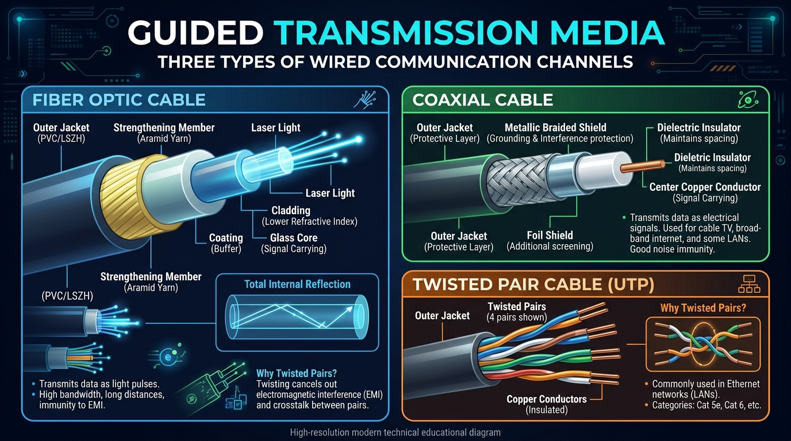
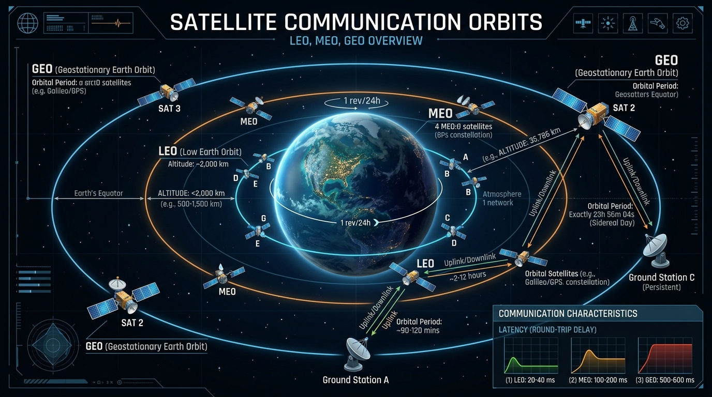

Transmission media are the physical channels through which data travels from sender to receiver. Explore Guided (wired) and Unguided (wireless) media in full technical detail.
Transmission media are located below Layer 1 and controlled by Layer 1 (Physical Layer). They are classified into two broad categories based on physical containment:

A Twisted Pair Cable consists of pairs of insulated copper wires twisted together in a helical spiral. Twisting the wires reduces **crosstalk** (electromagnetic interference between adjacent pairs) and external EMI because noise affects both wires equally and cancels out at the receiver.
| Category | Max Bandwidth | Max Data Rate | Typical Application |
|---|---|---|---|
| Cat 3 | 16 MHz | 10 Mbps | Legacy voice / 10BASE-T Ethernet |
| Cat 5e | 100 MHz | 1 Gbps (1000BASE-T) | Standard office LANs (up to 100m) |
| Cat 6 | 250 MHz | 10 Gbps (up to 55m) | Modern gigabit LANs |
| Cat 6a | 500 MHz | 10 Gbps (up to 100m) | High-speed data centers |
| Cat 7 | 600 MHz | 10 Gbps | Fully shielded (S/FTP) enterprise |
| Cat 8 | 2000 MHz | 25G / 40G (up to 30m) | Data center switch-to-switch links |
A Coaxial Cable carries signals of higher frequency ranges than twisted pair. It consists of a central solid copper core surrounded by a dielectric insulator, a woven metallic shield (outer conductor), and a protective outer plastic jacket.
A Fiber Optic Cable transmits data as light pulses through thin strands of glass or plastic fiber. It operates on the principle of Total Internal Reflection.
| Feature | Single-Mode Fiber (SMF) | Multi-Mode Fiber (MMF) |
|---|---|---|
| Core Diameter | Very small (~8–10 µm) | Larger (~50–62.5 µm) |
| Light Source | Laser diode | LED |
| Light Paths | Single light path (no dispersion) | Multiple light paths (modal dispersion) |
| Distance | Up to 100+ km without repeaters | Short distance (up to 2 km / 500m) |
| Applications | Undersea cables, ISP backbones, WAN | Enterprise LANs, Data Centers |
Radio Waves (3 kHz to 1 GHz) are omnidirectional — signals spread out in all directions from the transmitter. They can penetrate obstacles and walls, making them ideal for mobile communications and Wi-Fi.
Microwaves (1 GHz to 300 GHz) are unidirectional — signals require a strict Line-of-Sight (LOS) alignment between directional parabolic antennas.
Infrared waves (300 GHz to 400 THz) are short-range high-frequency waves. They cannot penetrate walls, which provides privacy and prevents interference between adjacent rooms.
Applications: TV remote controls, wireless computer mice, IrDA links.
Satellite communication uses orbiting satellites acting as microwave repeaters in space. An earth station sends signals up (**Uplink**), and the satellite transponder amplifies and retransmits signals back (**Downlink**).
| Orbit Type | Altitude | Latency | Primary Uses |
|---|---|---|---|
| GEO (Geostationary Earth Orbit) | 35,786 km | High (~250–500 ms) | TV broadcasting, weather monitoring |
| MEO (Medium Earth Orbit) | 2,000–35,000 km | Medium (~50–150 ms) | GPS navigation satellites |
| LEO (Low Earth Orbit) | 160–2,000 km | Low (~20–40 ms) | Starlink, OneWeb high-speed internet |

| Medium | Data Speed | Max Distance | EMI Noise Immunity | Cost |
|---|---|---|---|---|
| Twisted Pair (UTP/STP) | 10 Mbps – 10 Gbps | 100 meters | Low (UTP) to Moderate (STP) | Lowest |
| Coaxial Cable | 10 Mbps – 1 Gbps | 200–500 meters | Moderate | Medium |
| Fiber Optic Cable | 10 Gbps – 100+ Gbps | 100+ kilometers | Immune (Electromagnetically inert) | Highest |
| Radio Waves (Wi-Fi) | 11 Mbps – 9.6 Gbps | 10–100 meters | Susceptible to interference | Low (no cabling) |
| Microwave (LOS) | 10 Mbps – 10 Gbps | 30–50 kilometers | Susceptible to weather/rain fade | High (towers) |
| Satellite (LEO/GEO) | 10 Mbps – 1 Gbps | Global | Weather / Rain attenuation | Very High |